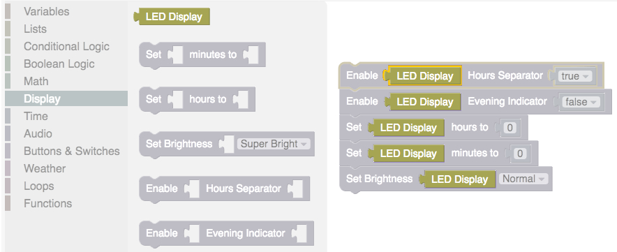
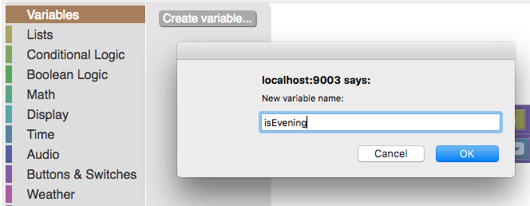
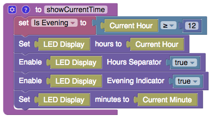
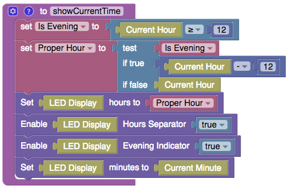
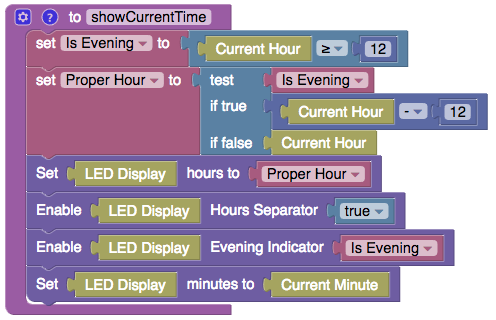

Right now we are essentially showing the hours in "military time," using a whole number between 0 and 23. Some people would rather use the AM/PM indicator instead, using whole numbers between 1 and 12 then lighting an LED up to indicate if the time relates to the evening hours or the morning hours.
Essentially we want to tell our clock that if the "hours" variable is less than 12, we need to keep the evening indicator light off. If the variable is greater than or equal to 12, we need to light the evening indicator. This kind of either/or logic is considered "conditional logic" when programming.
Our blocks, like a lot of languages, uses the keywords "if" and "else" to indicate if something is true, execute some code, else execute a different section of code. You can expand this logic to do something if a variable or condition is not true as well.
We dropped two new terms on you: variables and conditions. Let's look at variables first.
Variables are the highlighted blocks that snap in to our action blocks. So far we've been working with "constants," or variables that cannot be changed (like LED Display). Most variables are meant to be changed however - and we're going to create one just for that reason.
Click on the "Variables" drawer in the toolbox. You will see a button to "Create a new variable" - go ahead and click it. You are then asked to name your new variable: name it "isEvening."
We will set this value to be "true" if the number of hours that have passed in the day are 12 or greater, and "false" if we have not yet passed noon. This will require the "Greater than or Equal To" block that is also in the "Conditional Logic" drawer of the toolbox.
Now let's use this new knowledge to tell the clock to display the current hour if it is not the evening, else subtract twelve hours from the current hour. This will require the if/else block from the "Conditional Logic" drawer:
Now we no longer show things in military time! We still need a way to indicate if it's the morning or the evening however. Luckily this is easy - we don't even need to use conditional logic!
Essentially what we are doing here is saying the evening indicator should be the same value as "isEvening," which is always either True or False. If "isEvening" is true, "set the evening indicator" is true as well!
We have now covered functions, variables, constructors and conditional logic. Those concepts will carry us through to our next lesson! Let's play some sound to wake up.